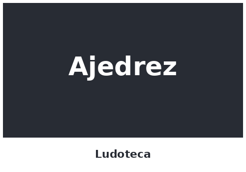
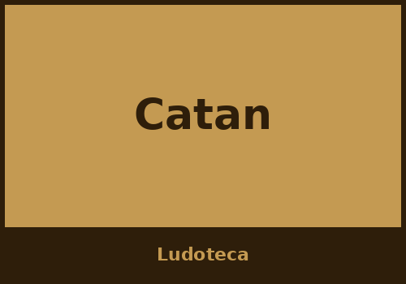
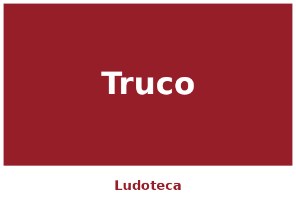
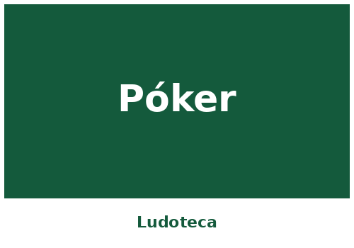
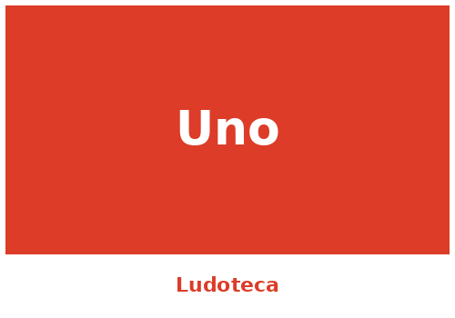
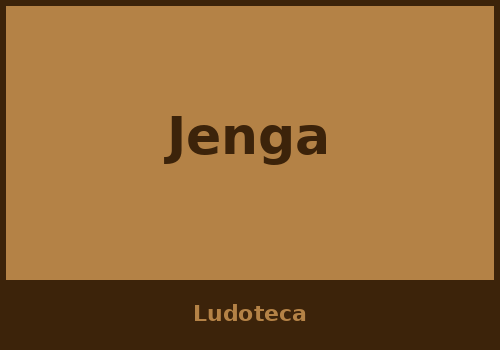

Catálogo completo
Todos los juegos disponibles en la ludoteca, organizados por categoría.
Estrategia

Cartas


Familiares


Todos los juegos disponibles en la ludoteca, organizados por categoría.





